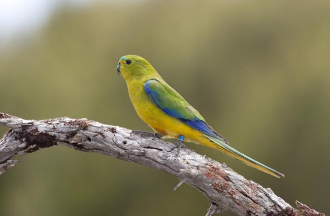

. ↑ .
Гондурасский изумруд
Гондурасский изумруд - вид птиц, обитающий исключительно на территории Гондураса. Этот вид птиц
уменьшается в численности из-за вырубки, так как теряет место обитания. Птица занесена в Красную
книгу как редкая и свойственная только для Гондураса, где её численность продолжает сокращаться. Вид
птиц находится под угрозой исчезновения.

Оранжево-пузатый попугай
Обитает в Австралии и отмечен как редкая птица, потому что в дикой природе их осталось менее 50.
Вид находится под угрозой исчезновения из-за ухудшения мест обитания, появления хищных видов и
болезней. Птица занесена в Красную книгу как вымирающий вид и численность её сокращается.
Азиатский ибис
Он изобилует в странах Азии, в основном, Китае и Японии. Когда-то эта птица была очень
многочисленна, но из-за определенных факторов сократила свою численность. Количество видов началось
уменьшаться в 19 и 20-м веках из-за вырубки леса, применения агрохимикатов на рисовых полях, охоты,
изменения водно-болотного ландшафта. Эта птица находится под угрозой исчезновения и полного
вымирания, поэтому занесена в Красную книгу.
Индийская большая дрофа
Индийская большая дрофа — это дрофа, которую можно встретить в Индии и прилегающих к ней районах
Пакистана. Крупная птица с горизонтальным туловищем и длинными ногами является одной из самых
тяжёлых летающих птиц.
Когда-то индийская большая дрофа была распространена на засушливых равнинах Индийского
субконтинента, но в 2011 году популяция насчитывала лишь около 250 оставшихся в живых особей,
поскольку вид резко сократился из-за охоты и потери среды обитания.
« Назад